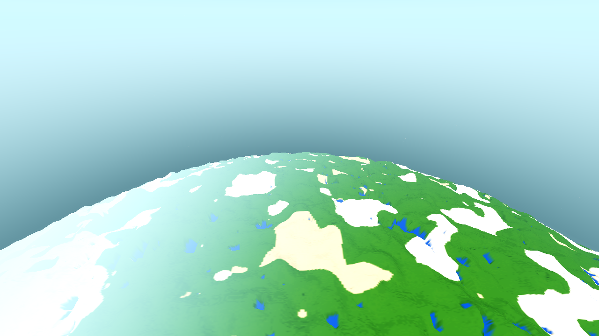
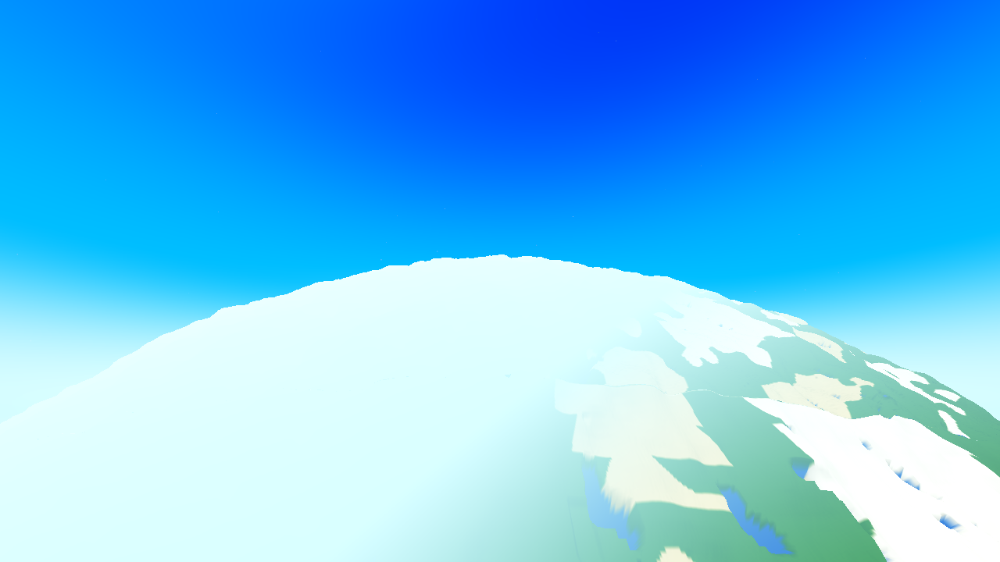
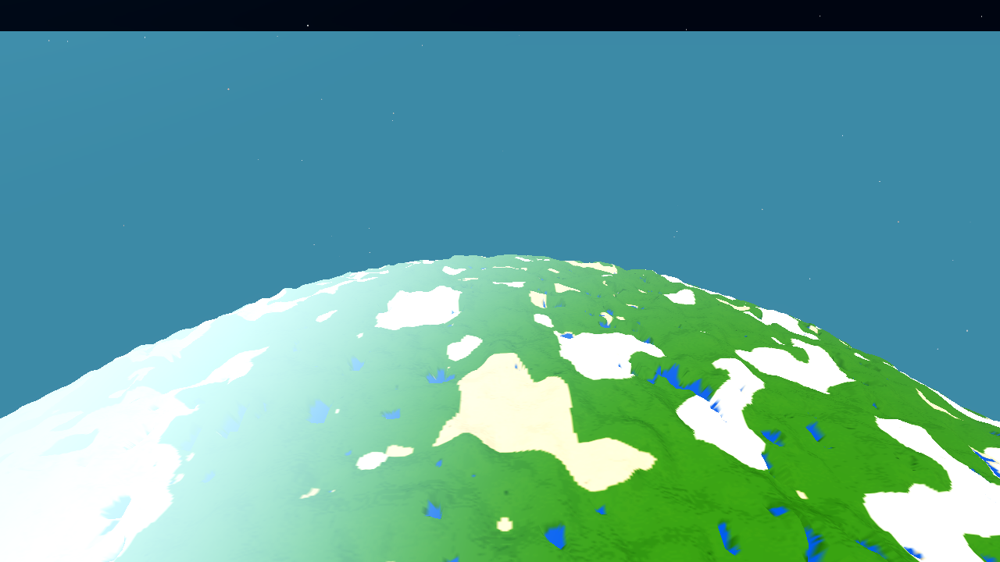
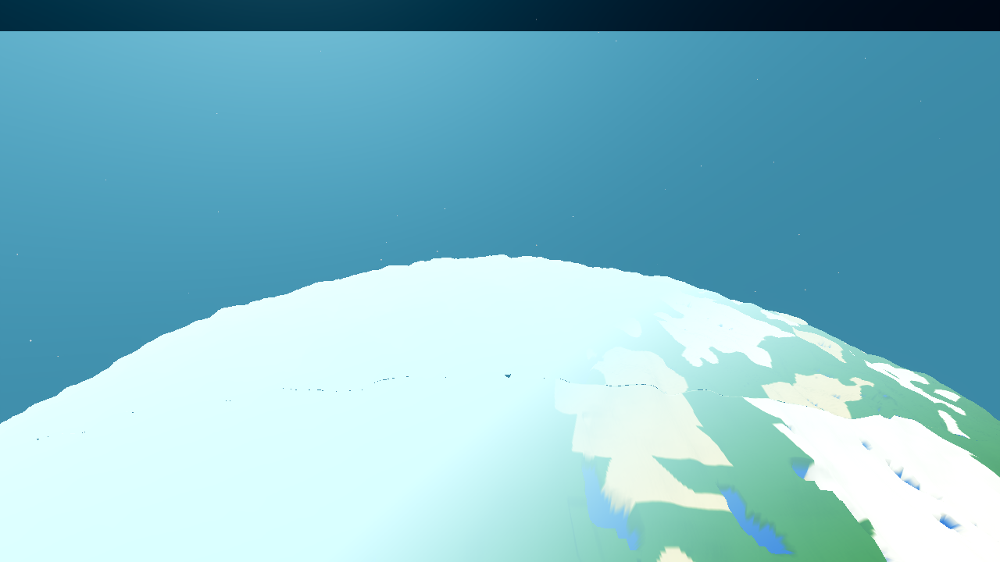
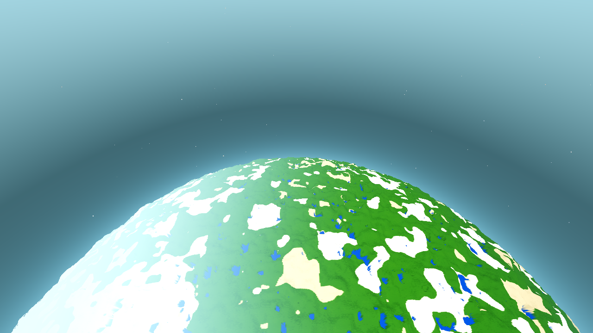
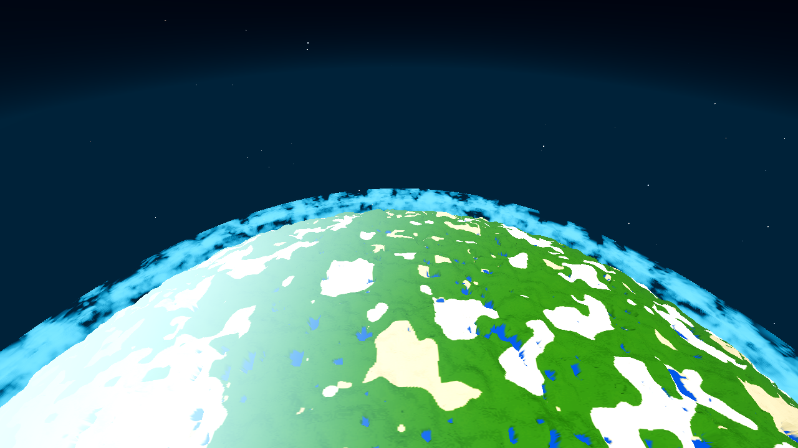
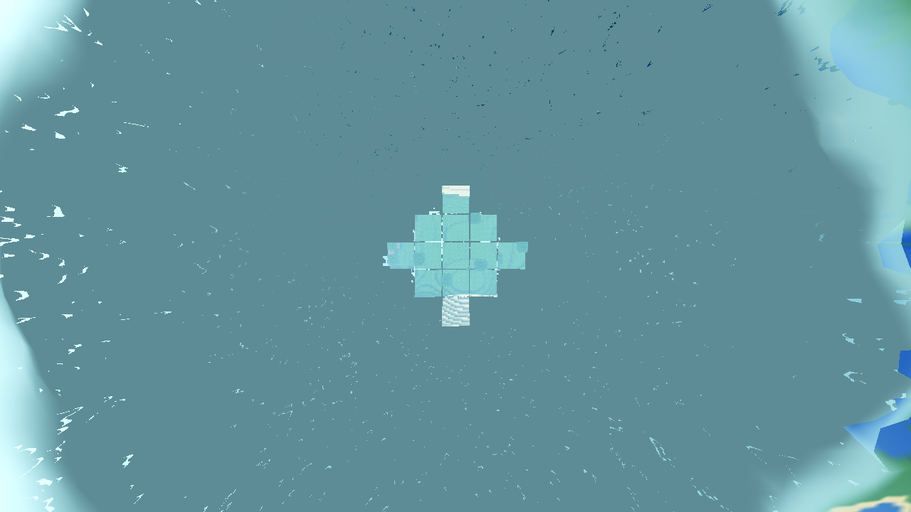
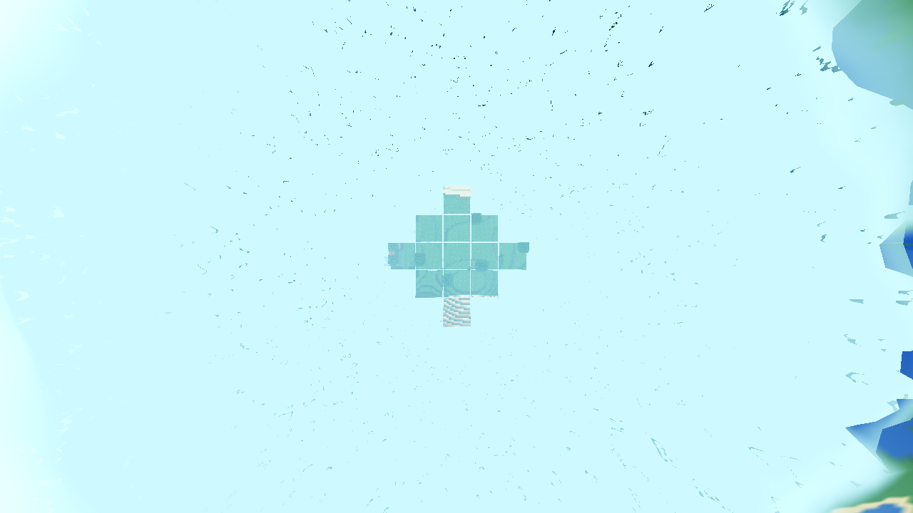
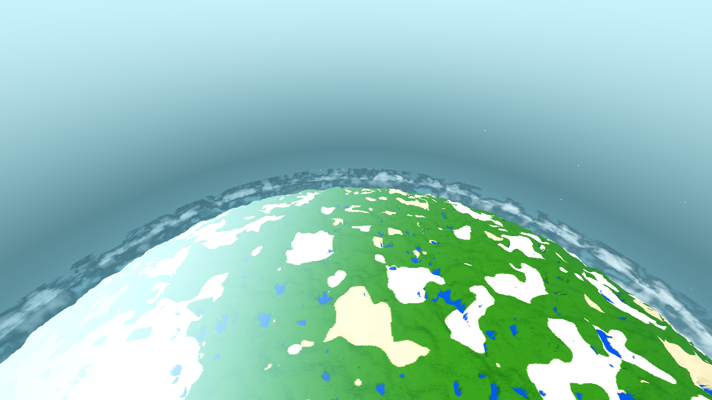
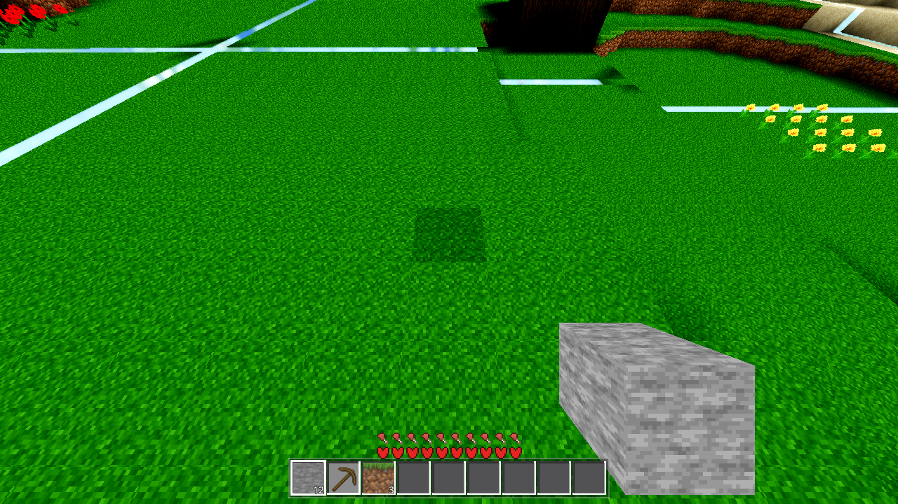

BEFORE A (841 m): pale dome (210,250,255)
Tree: HEAD d3f07c1 + 4 fenced WIP files (parallel session, untouched). Renderer: Forward+ lavapipe (llvmpipe, software GL — a proxy for the shipped look; evidence about geometry/layout/numbers, not the shipped forward_plus pixels). Preset: R24 (R=4000, SEA=126, fog_far=332, render_edge=400), seed 44, T=0.5 (day=1.0), 1280×720, drain 60.
The one change, in one sentence: the sky is now keyed to the local zenith (the radial through the camera) instead of world Y, and one atmosphere height A = 1200 m (Aero.atmosphere_height, env AWECRAFT_ATMO) is the single home for "how far up it is space" — the sky's space window smoothstep(0.25A, A, alt), the star field's full-opacity point, the sun-glow fade, the body's h_full, and the limb's geometry (the tangent cone at the R+A shell, falloff 0.25A) all derive from it.
Switch: the existing sky_altitude setting (default ON) redefined per the ticket: ON = the new local-zenith sky; OFF = the pre-AC-0402 expression bit-for-bit (sky_off is the old body verbatim; the star material keeps its u_opacity contract; the cloud wash and the A-limb uniforms are inert). No new setting row.
ALL GATES GREEN — before and after.
| Gate | Before (pre-change tree) | After (this change) | Standing / owed |
|---|---|---|---|
| G0 (headless parse) | exit 0 — SCRIPT 0 / SHADER 0 | exit 0 — SCRIPT 0 / SHADER 0 | zero SCRIPT/SHADER ERROR lines + clean exit (scenes/AGENTS.md: rc=0 is not the gate) |
| genhash | 25/25 | 25/25 byte-identical to genhash-before.log (GENMS 125→127) | world/* was touched (world.gd, satellite_body.gd) — byte-identical owed ✓ |
| shaderforce | 12/12 ok, failed:[] | 12/12 ok, failed:[] — sky 20→23 params, star 6→9, cloud 32→35 (the new uniforms are declared AND pushed); 0 real SCRIPT/SHADER ERROR lines | 3 shaders edited (sky, star, cloud) |
| farab | h_mismatch 0, slab_cmp 1080/1080 ×2, mat_surf_diff 0 | h_mismatch 0, slab_cmp 1080/1080, mat_surf_diff 0, h_bad_h/top 0, ok:true | protected AC-0387/AC-0397 far/h-only contract ✓ |
| satellite (r4) | ok — ladder hidden/rim/dissolve/full green, geom ok, ac0390 ok | ok — ladder green (the "full" teleport h=1300 → nadir_d 1174 > render edge → op 1.0); h_full now 1200 (diagnostic only); h_first 126.59 unchanged | protected arm; visibility thresholds still fog-derived ✓ |
| farhigh (R16) | leg1 h_ident 0; leg2 facet_cols 3/3 flat 0 max_dev 0.0; leg3 body_fit_max 0.197 | leg1 h_ident_bad_cols 0; leg2 facet_cols 3/3 flat 0 max_dev 0.0 (all-FACET); leg3 body_fit_max 0.197 body_excess 0.0; ok:true | protected AC-0416 far tier follows curvature ✓ |
| SMOKE battery | ok:true (player;interact;light;fluids;genhash, 258 s) | ok:true (259 s, 0 error lines) | no engine env fog / wall-band regression (AC-0415) ✓ |
Same TRUE altitude at two well-separated positions: A = face centre (spawn radial) at param 700 → true 841.0 m; B = 5600 m in-plane tangent offset (projected onto the R sphere → the surface point is what the face geometry refers to), param 842 → true 842.0 m (the 1 m mismatch is below noise). The strip is the sky region above the disc limb (rows 4–333, central 200 px) — pure sky, no terrain.




| strip top-20 rows (med, 8-bit) | BEFORE A | BEFORE B | AFTER A | AFTER B |
|---|---|---|---|---|
| RGB | (210, 250, 255) | (0, 67, 252) | (0, 5, 17) | (0, 42, 63) |
| A-vs-B Δ (|A−B| per channel) | (210, 183, 3) — the fake horizon: at the same altitude the sky colour depended on where on the sphere you stood (the dome was shaded against world Y; B's local zenith is ~46° off +Y) | (0, 37, 46) | ||
| strip bottom-20 (near the limb) | (115, 154, 255) | (41, 178, 255) | (81, 138, 255) | (96, 148, 255) |
The residual AFTER A-vs-B difference is not the fake horizon: it is the genuine fixed-sun geometry (the sun-side modulation of the limb glow and the sun's position in the rotated frame). The 1:1 forward model (this page's measurement, tasks/AC-0417/measure.py) predicts an A-vs-B Δ of (29, 45, 46) — i.e. it reproduces the measured (0, 37, 46) from the position-invariant sky model plus the world-fixed sun. Model-vs-pixel median deltas: AFTER A 21/255, AFTER B 16/255 (BEFORE: 16/255, 22/255 — the model's known ACES chromatic band near the limb). The painted horizon is level in both AFTER frames (the disc edge is a clean arc in each local frame).
One atmosphere height A = 1200 m. Consumers, on the same altitude ladder (true radial altitude; the non-offset preset's param + 141 m spawn radius):
| true alt (m) | BEFORE sky window (AC-0402, 500–3200) | BEFORE star op (=S, physics 500–2000) | AFTER sky window (0.25A–A = 300–1200) | AFTER star op (= A window) | body op_nadir (fog 332–400) |
|---|---|---|---|---|---|
| 341 | 0.0000 (B5) | 0.0000 | 0.0060 (A5) | 0.0060 | 0.0 (d=215) |
| 641 | — | — | 0.3219 (aL500) | 0.3219 | 1.0 (d=515) |
| 841 | 0.0438 (B1) | 0.132 (S) | 0.6496 (A1) | 0.6496 | 1.0 (d=715) |
| 1041 | — | — | 0.9174 (aL900) | 0.9174 | 1.0 (d=915) |
| 1341 | 0.2306 (computed, same window) | 0.591 (S) | 1.0000 (A10) — FULL SPACE AT A | 1.0000 (stars full in the A10 frame — visible at day, because the sky IS space) | 1.0 (d=1215) |
| 1741 (B3) | 0.4396 — the old window was still 44% air at 1741 m | 0.921 | 1.0 (stays full above A) | 1.0 | 1.0 |
Every AFTER value is the pushed uniform read back at the snap moment (the RESULT sky block), not a re-derivation. The three quantities "the sky is space" (window top = A), "the stars are full" (same window) and "the planet is fully established" (h_full = A = 1200, the SATDIAG line of every AFTER render) land at the same altitude — pre-AC-0417 the sky window ran to 3200 m while the body's h_full was 526 m (the ~700 m gap from the ticket). Stated, per the ticket: the body's per-fragment opacity (op_nadir) is still fog-distance driven and reaches 1.0 at 526 m — the fog wall stays render-distance-coupled (the AC-0415 contract); h_full = A is the full-establishment threshold (reported, diagnostic-only: it never gates visibility or opacity).


Nadir view at true 341 m (param 200) — the body's dissolve annulus (op 0.01–0.99, d ∈ [332,400], 3.43°–4.57° = 28.1–37.5 px). Finding (stated): at this altitude the annulus background is the voxel sea — the terrain occludes the sky at nadir (the visible annulus is (131,205,205) before / (132,207,205) after — sea, chunk seams visible in the zoom). So the sky the gap "shows through" is measured as the model sky at those exact pixels (the background where the tiers draw nothing):
| the sky behind the gap (8-bit, same pixels) | BEFORE | AFTER |
|---|---|---|
| below-cone background | (123, 149, 154) — the old dark below-horizon branch (the "hole" the ticket warns about) | (211, 228, 232) — the single-source AIR colour (u_air 8-bit = (208,241,251), the value the fog wall and the body dissolve to) — haze, not black |


The pre-AC-0417 limb was a fixed 300 m falloff on the R+SEA impact parameter — it ended below the cloud tops (the deck occupies R+275…R+400, and the volume's virtual top R+450 with the AC-0407 extend). Now the limb geometry is the tangent cone at the A shell: u_atmo_radius = R + A (pushed by world.gd, the same two values on the sky and the cloud materials — one home: Aero.atmo_limb_radius / atmo_limb_falloff) with the falloff 0.25A (= 300 m at the default A — today's hard-coded value, now a stated fraction of A). The AC-0414 body-LOADED gate (already in the tree: u_limb_loaded/u_body_loaded) lands with the enlarged clamp, as the ticket's ordering clause requires — the filled-disc (fake planet) only exists while the body is LOADED. Invariant asserted once in _ac0401_push: cloud tops (live shell extent + AC-0407 extend) strictly inside A — 450 < 1200 ✓ (a push_warning fires if A is ever lowered past the deck).
Angular half-widths from nadir, at the stated altitude 1341 m (camera radius 5341 m):
| silhouette | BEFORE (rim = R+SEA = 4126) | AFTER (rim = R+A = 5200) |
|---|---|---|
| terrain disc (R) | 48.50° | 48.50° |
| cloud deck top (R+450) | 56.43° | 56.43° |
| limb (glow clamp edge) | 50.58° — the deck EXCEEDS the rim by 5.85°: the atmosphere ended below the cloud tops | 76.81° — the deck is INSIDE the rim by 20.38°: the glow reaches well past the clouds (at the local horizon the glow factor is still 0.625 — the A shell extends past the top of the frame) |

Addendum 2 — the deck is washed by the limb: the cloud material now takes the same air colour it already takes (u_vol_air, the single source) and the same impact-parameter haze factor the limb term uses (one home: ac0417_wash() in cloud_layer.gdshader — 1 − exp(−b/0.25A) about the same centre, gated to cameras at/above the A shell with a ±0.4·falloff smoothstep on camera radius so the deck's contrast drops toward the limb exactly like the terrain's fog fade, and is exactly zero from inside the atmosphere — the ground view of the deck is bit-identical to before). The wash is gated by the same sky_altitude switch (OFF = the exact pre-AC-0417 cloud material). Measured on the deck band (rows 310–352 × x 480–800 of the 1341 m frame, medians): the band moves (98, 151, 160) → (82, 199, 227) — toward u_air (208, 241, 251) — while the dome above it goes (181, 224, 233) pale air → (0, 20, 37) space: the crisp white deck edge against a thin rim becomes a washed cyan band inside the A-shell glow.

h_full = A is done (diagnostic-only — see F2). h_first gates the body's visibility (visible = h_band > h_first); re-deriving it against A gives sqrt((R+A)² + fog_far²) − R ≈ 1211 m — above the atmosphere top (A = 1200), so the rim would pop in at full opacity past the space transition. Kept at the fog window (139.3 m, unchanged).mix(u_night, 1.0, u_space_sky) — at day (T=0.5) the stars' opacity is the A window (visible once the sky is space, as in the A10 frame); at night it is 1.0 exactly as before (bit-for-bit). The OFF path keeps u_opacity = (1−day)+day·S verbatim.u_air, display-space 8-bit sRGB in the sky pass's native space — the 8-bit source the env fog / body / clouds take srgb_to_linear of), above it SPACE; the cone keeps the limb term (now at the A shell). The OFF path is the pre-AC-0402 expression verbatim.godot/core/aero.gd — ATMOSPHERE_HEIGHT, atmosphere_height() (env AWECRAFT_ATMO),
sky_space(), atmo_limb_radius/falloff(), fog_display_srgb()
(fog_display refactored to it — bit-identical output)
godot/core/aero_sky_gradient.gdshader — u_air, u_atmo_radius, u_atmo_falloff; sky() split into
sky_off (pre-AC-0402 verbatim) / sky_on (local zenith hl,
two colours + one cone, limb at the A shell, A-window gates)
godot/core/star.gdshader — u_sky_alt / u_space_sky / u_night; ALPHA =
shape·mix(u_opacity, mix(u_night,1,u_space_sky),u_sky_alt)·occl
godot/core/cloud_layer.gdshader — addendum 2: u_atmo_radius/u_atmo_falloff/u_limb_wash +
ac0417_wash() (the impact-parameter haze, same centre/scale)
godot/world/world.gd — _ac0401_push: the A window replaces the AC-0402 band;
atmo + wash + star pushes; u_air (display) with the linear
air (one gate); the cloud-tops-inside-A assert
godot/world/satellite_body.gd — h_full = Aero.atmosphere_height() (diagnostic); h_first
comment (deviation D1)
godot/scenes/harness.gd — measurement arm extension only (env-gated, unset =
byte-identical): AWECRAFT_CAM_OFF / AWECRAFT_CAM_NADIR,
RESULT gains spawn + the live sky uniforms
G0 after: exit=0, grep -c "SCRIPT ERROR|SHADER ERROR" = 0 (log .scratch/AC-0417/g0-after.log).
genhash after: 25/25 GENHASH lines byte-identical to .scratch/AC-0417/genhash-before.log (the world-touching change owed the byte-identical; the change is render-side only — uniform pushes + a diagnostic threshold).
tasks/AC-0417/measure.py: a 1:1 Python port of both sky forms (OFF verbatim / ON final, including the A-shell limb and the no-col-clamp-after-limb detail) + the full Forward+ chain (pow 2.2 pre-decode → exposure 0.85 → Narkowicz-ACES → contrast 1.1 → saturation 1.25 → sRGB encode, + the wash quad riding u_space from main.gd — unchanged by this ticket). Camera basis mirrors the harness planet preset (spawn [8.5, 141, 8.5], radius R+141; the in-plane offset re-projected onto the R sphere; nadir aim with the horizontal up hint). Model-vs-pixel medians: 11–22/255 over the sky strips (the known ACES chromatic band near the limb/mid-tones; Godot's ACES ≠ Narkowicz). Pushed uniforms are read back from the RESULT at the snap moment — the measurement never re-derives a value the tree pushed.